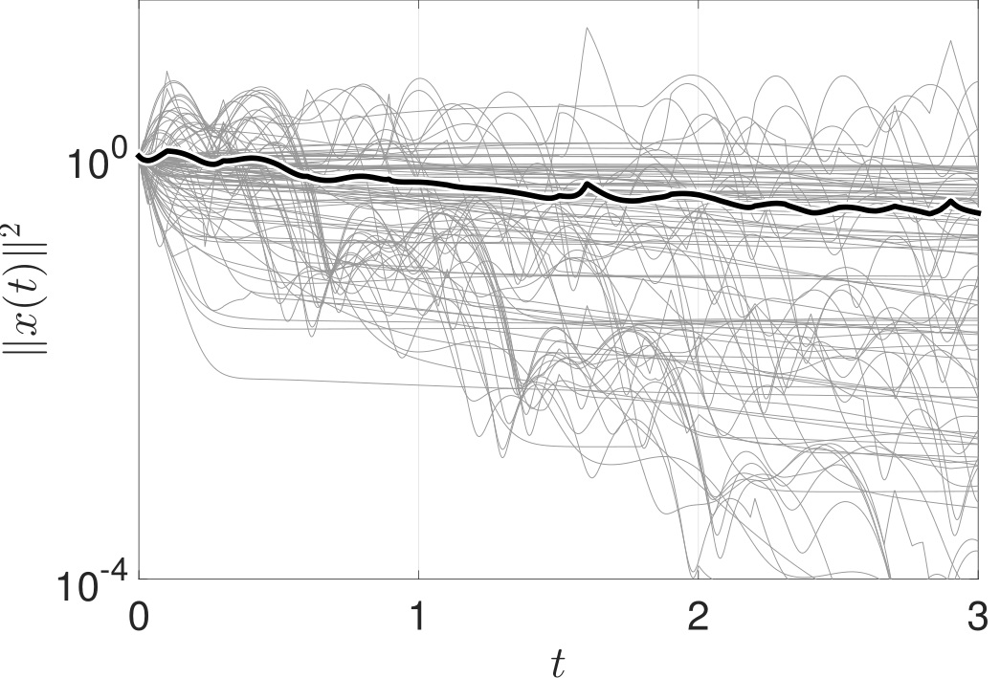
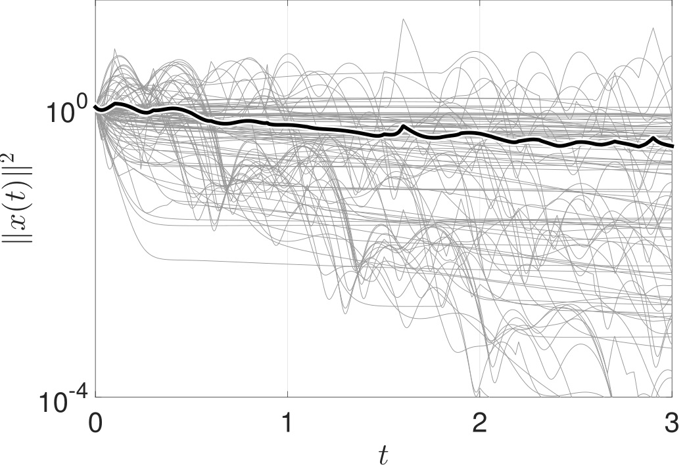

Temporal networks
Even though most complex networks of practical relevance are time-varying (i.e., their connection patterns dynamically change over time), current analysis tools are still focused on static networks. In my research, I aim towards developing a rigorous, yet tractable, framework for the analysis, control, and optimization of dynamical processes taking place over temporal networks.
Containment of epidemic processes over adaptive networks
Although the dynamics of epidemics and temporal networks are usually studied separately, there are many cases in which the two different dynamics affect each other. This can be illustrated by a pheomenon called social distancing, where healthy individuals avoid contact with infected individuals in order to protect themselves against the disease. In this research, we aim to develop an efficient algorithm to optimally tune the social-distancing rates in order to eradicate epidemic outbreaks in arbitrary networks [PRE16, CDC15].


Spreading processes over large-scale temporal netowrks
In this research, we study spreading processes over large-scale temporal networks with heterogeneous rates, non-identical edge-switching signals. In this direction, we proposed a novel model of temporal networks called aggregated-Markov edge-independent networks. Using spectral graph theory and the stability of switched linear systems, we have given an epiemic threshold in terms of the largest eigenvalues of a matrix whose size grows linearly with the number of nodes in the network.

Control of spreading processes
Optimal resource distribution
In this research, we consider the following epidemiological problem: Assume that we have access to vaccines that can be used to reduce the infection rates of individuals in the network, as well as antidotes that can be used to increase their recovery rates. Assuming that both vaccines and antidotes have an associated cost and that we are given a fixed budget, how should we distribute vaccines and antidotes throughout the individuals in the network in order to eradicate an epidemic outbreak at the maximum decay rate? In this direction, we have derived an optimal solution to this problem using an efficient optimization framework called geometric programming.

Switched systems
Stability analysis
[Automatica, SCL, SICON] 

Bet-hedging strategies in biological populations